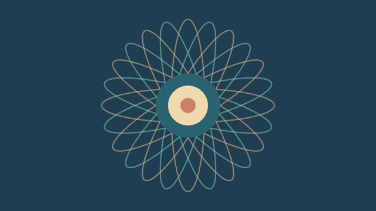
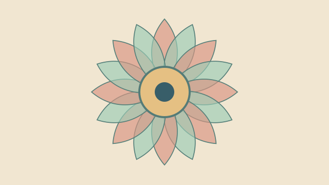
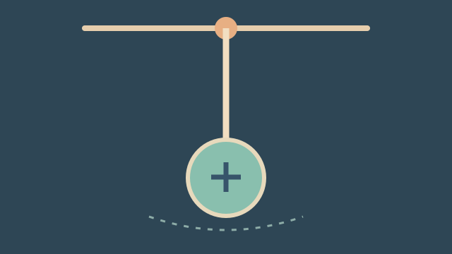

Self-contained hover animated SVG
每个 SVG 源文件都内嵌 CSS 动效，只在鼠标悬停时执行。系统设置“减少动态效果”时保持静态；作为 img 引入时不提供键盘触发，故只适合作为装饰素材。



每个 SVG 源文件都内嵌 CSS 动效，只在鼠标悬停时执行。系统设置“减少动态效果”时保持静态；作为 img 引入时不提供键盘触发，故只适合作为装饰素材。


